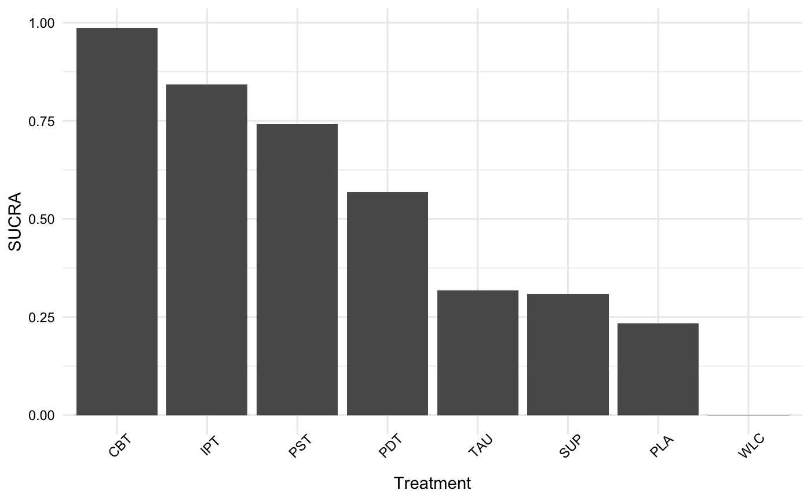

Calculate the Surface Under the Cumulative Ranking score of from a network meta-analysis
sucra.RdThis function calculates the SUCRA (Surface Under the Cumulative Ranking) score from a rank
probability matrix or an object of class mtc.rank.probability generated by the rank.probability
function.
Arguments
- x
An object of class
mtc.rank.probabilitygenerated by therank.probabilityfunction or a matrix/data.frame in which the rows correspond to the treatment, and columns to the probability of a specific treatment having this rank (see Details). Rownames of the matrix should contain the name of the specific treatment.- lower.is.better
Logical. Do lower (i.e., more negative) effect sizes mean that effects are higher?
FALSEby default. Use the default when the provided matrix already contains the correct rank probability for each treatment, and values ought not to be inverted.
Details
The SUCRA score is a metric to evaluate which treatment in a network is likely to be the most efficacious in the context of network meta-analyses. The SUCRA score is calculated in the function using the formula described in Salanti, Ades and Ioannidis (2011): $$SUCRA_j = \frac{\sum_{b=1}^{a-1}cum_{jb}}{a-1}$$ Where \(j\) is some treatment, \(a\) are all competing treatments, \(b\) are the \(b = 1, 2, ..., a-1\) best treatments, and \(cum\) represents the cumulative probability of a treatment being among the \(b\) best treatments.
Other than an object of class mtc.rank.probability for argument x, the function can also be provided
with a \(m \times n\) matrix where \(m\) are rows corresponding to each treatment in the
network meta-analysis, and the \(n\) columns correspond to each rank (1st, 2nd, etc.). Rank probabilities
should be provided as a value from 0 to 1. Rownames of the matrix should correspond to the treatment names.
Here is an example rank probability matrix for eight treatments:
| . | [,1] | [,2] | [,3] | [,4] | [,5] | [,6] | [,7] | [,8] |
| CBT | 0.000000 | 0.000000 | 0.000000 | 0.000000 | 0.000000 | 0.001275 | 0.087400 | 0.911325 |
| IPT | 0.000000 | 0.000000 | 0.000000 | 0.000000 | 0.000000 | 0.179400 | 0.745875 | 0.074725 |
| PDT | 0.000000 | 0.000000 | 0.000225 | 0.020300 | 0.978025 | 0.001450 | 0.000000 | 0.000000 |
| PLA | 0.002825 | 0.551175 | 0.262525 | 0.181550 | 0.001925 | 0.000000 | 0.000000 | 0.000000 |
| PST | 0.000000 | 0.000000 | 0.000000 | 0.000025 | 0.001450 | 0.817850 | 0.166725 | 0.013950 |
| SUP | 0.000000 | 0.216450 | 0.398700 | 0.383950 | 0.000900 | 0.000000 | 0.000000 | 0.000000 |
| TAU | 0.000375 | 0.229200 | 0.338525 | 0.414175 | 0.017700 | 0.000025 | 0.000000 | 0.000000 |
| WLC | 0.996800 | 0.003175 | 0.000025 | 0.000000 | 0.000000 | 0.000000 | 0.000000 | 0.000000 |
References
Harrer, M., Cuijpers, P., Furukawa, T.A, & Ebert, D. D. (2019). Doing Meta-Analysis in R: A Hands-on Guide. DOI: 10.5281/zenodo.2551803. Chapter 11.2.
Salanti, G., Ades, A. E. & Ioannidis, J.P.A. (2011). Graphical Methods and Numerical Summaries for Presenting Results from Multiple-Treatment Meta-Analysis: An Overview and Tutorial. Journal of Clinical Epidemiology, 64 (2): 163–71.
Examples
if (FALSE) {
# Example1 : conduct NMA using gemtc, calculate SUCRAs
suppressPackageStartupMessages(library(gemtc))
suppressPackageStartupMessages(library(igraph))
data("NetDataGemtc")
network = suppressWarnings(mtc.network(data.re = NetDataGemtc))
plot(network, layout = layout.fruchterman.reingold)
model = mtc.model(network, linearModel = "fixed",
n.chain = 4,
likelihood = "normal",
link = "identity")
mcmc = mtc.run(model, n.adapt = 5000, n.iter = 100000, thin = 10)
rp = rank.probability(mcmc)
sucra = sucra(rp, lower.is.better = TRUE)
sucra
plot(sucra)}
# Example 2: construct rank proabability matrix, then use sucra function
rp = rbind(CBT = c(0.000000, 0.000000, 0.000000, 0.000000, 0.000000, 0.001500, 0.088025, 0.910475),
IPT = c(0.000000, 0.000000, 0.000000, 0.000000, 0.000000, 0.176975, 0.748300, 0.074725),
PDT = c(0.000000, 0.000000, 0.000250, 0.021725, 0.976525, 0.001500, 0.000000, 0.000000),
PLA = c(0.003350, 0.546075, 0.266125, 0.182125, 0.002325, 0.000000, 0.000000, 0.000000),
PST = c(0.000000, 0.000000, 0.000000, 0.000000, 0.001500, 0.820025, 0.163675, 0.014800),
SUP = c(0.000000, 0.217450, 0.403950, 0.378000, 0.000600, 0.000000, 0.000000, 0.000000),
TAU = c(0.000225, 0.232900, 0.329675, 0.418150, 0.019050, 0.000000, 0.000000, 0.000000),
WLC = c(0.996425, 0.003575, 0.000000, 0.000000, 0.000000, 0.000000, 0.000000, 0.000000))
sucra(rp, lower.is.better = TRUE)
#> SUCRA
#> CBT 0.9869964286
#> IPT 0.8425357143
#> PST 0.7416821429
#> PDT 0.5684678571
#> TAU 0.3175571429
#> SUP 0.3088214286
#> PLA 0.2334285714
#> WLC 0.0005107143
plot(sucra(rp, lower.is.better = TRUE))
